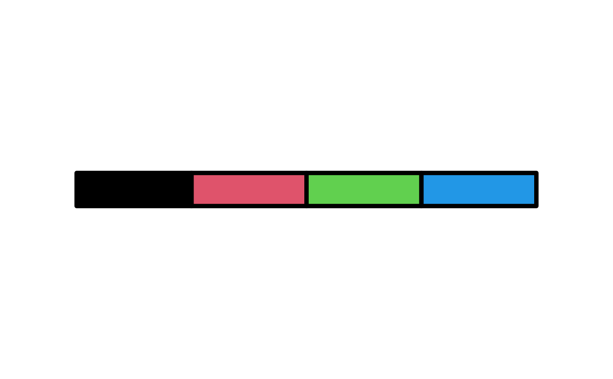

Create colored rectangle annotations for categorical data
Source:R/heatmaps-sampleAnnotation.R
anno_cat.RdSimilar to anno_simple but with individual boxes!
Usage
anno_cat(
x,
which,
renamer = identity,
col = distinct_palette(),
width = NULL,
height = NULL,
box_col = "white",
box_lwd = 0.5,
border_col = NA,
border_lwd = 1,
legend = TRUE,
legend_title = ""
)Arguments
- x
data vector, treated as categorical
- which
Whether it is a column annotation or a row annotation?
- renamer
function renaming variable values for legend
- col
colors vector, at least as long as unique(x), optionally named by x levels
- width
grid unit object or NULL
- height
grid unit object or NULL
- box_col
colour of boxes around individual cells
- box_lwd
line width of boxes around individual cells
- border_col
colour of border around all cells
- border_lwd
line width of border around all cells
- legend
generate legend for this annotation (attached as attribute of heatmap, and not automatically included in plot)
- legend_title
title for legend, if drawn
Examples
library(ComplexHeatmap)
#> Loading required package: grid
#> ========================================
#> ComplexHeatmap version 2.26.1
#> Bioconductor page: http://bioconductor.org/packages/ComplexHeatmap/
#> Github page: https://github.com/jokergoo/ComplexHeatmap
#> Documentation: http://jokergoo.github.io/ComplexHeatmap-reference
#>
#> If you use it in published research, please cite either one:
#> - Gu, Z. Complex Heatmap Visualization. iMeta 2022.
#> - Gu, Z. Complex heatmaps reveal patterns and correlations in multidimensional
#> genomic data. Bioinformatics 2016.
#>
#>
#> The new InteractiveComplexHeatmap package can directly export static
#> complex heatmaps into an interactive Shiny app with zero effort. Have a try!
#>
#> This message can be suppressed by:
#> suppressPackageStartupMessages(library(ComplexHeatmap))
#> ========================================
# draw the annotation without a heatmap, you will never normally do this!
vp <- viewport(width = 0.75, height = 0.75)
grid::grid.newpage()
pushViewport(vp)
cats <- letters[1:4]
draw(anno_cat(cats, which = "row"))
grid::grid.newpage()
pushViewport(vp)
draw(
anno_cat(
x = cats, col = structure(names = cats, 1:4), which = "column",
box_col = "black", box_lwd = 5
)
)

# developer note #
# list of annotations can be split and ordered (adding NULL makes a list)
# https://jokergoo.github.io/ComplexHeatmap-reference/book/a-list-of-heatmaps.html
# (section #4.8 concatenate-only-the-annotations)
grid::grid.newpage()
pushViewport(vp)
 annoList <- rowAnnotation(
hi = anno_cat(cats, which = "row", border_col = "black")
) +
NULL
draw(object = annoList, row_split = c(1, 1:3), row_order = 4:1)
pushViewport(viewport(x = 0.6))
draw(anno_cat(cats, "row", legend_title = "abcd") %>% attr("Legend"))
annoList <- rowAnnotation(
hi = anno_cat(cats, which = "row", border_col = "black")
) +
NULL
draw(object = annoList, row_split = c(1, 1:3), row_order = 4:1)
pushViewport(viewport(x = 0.6))
draw(anno_cat(cats, "row", legend_title = "abcd") %>% attr("Legend"))